|
A team of cave explorers and qualified
mining specialists made up from members of the British Cave Research
Association, South Wales Caving Club, Chelsea Speleological Society
and Eldon Pothole Club (Derbyshire) carried out an excavation at
Pwll Du (NGR SO 2457 1163) on Saturday 17th
July 1999 with a view to regaining access to and carrying out a
preliminary inspection of a hitherto lost tram tunnel, sealed to
human presence for some 65 years.
|
|||
|
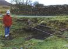 |
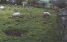 Sheep in the field where a small depression suggests an excavation might give entry to the lost Garnddyrys tunnel branch. (Clive Gardener) |
||
|
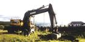 Walter’s swing shovel excavator moves in to start the hole. (Paul Deakin) |
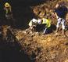 Testing the tunnel atmosphere for harmful gases. (Paul Deakin) |
||
|
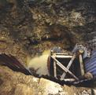 Setting up a timber shaft for enabling future access. (Paul Deakin) |
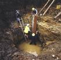 The shaft progresses: outward tunnel branch visible at the foot of the excavation.(Paul Deakin) |
||
| Back-filling the hole, some 5m deep to the tunnel roof. (Paul Deakin) | 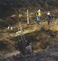 |
Packing the earth and rock back into the hole. (Paul Deakin) | 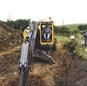 |
| Final top section of shaft under construction. (Paul Deakin) | 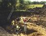 |
Placing the manhole support, watched by the old residents of Pwll Du.(Paul Deakin) |
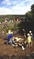 |
| Safe exit made at the end of the first successful operation. (Paul Deakin) | 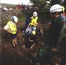 |
||